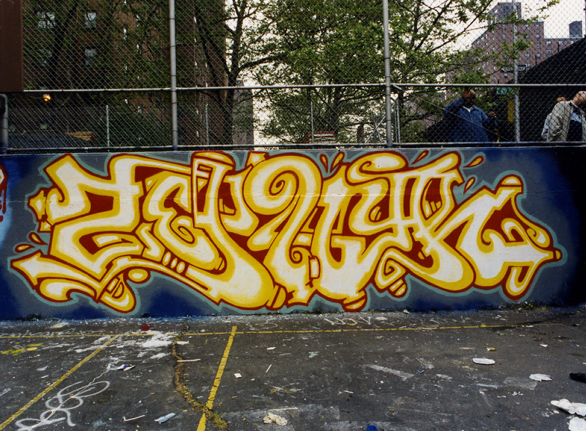
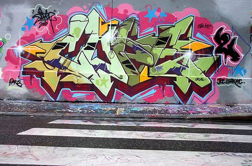
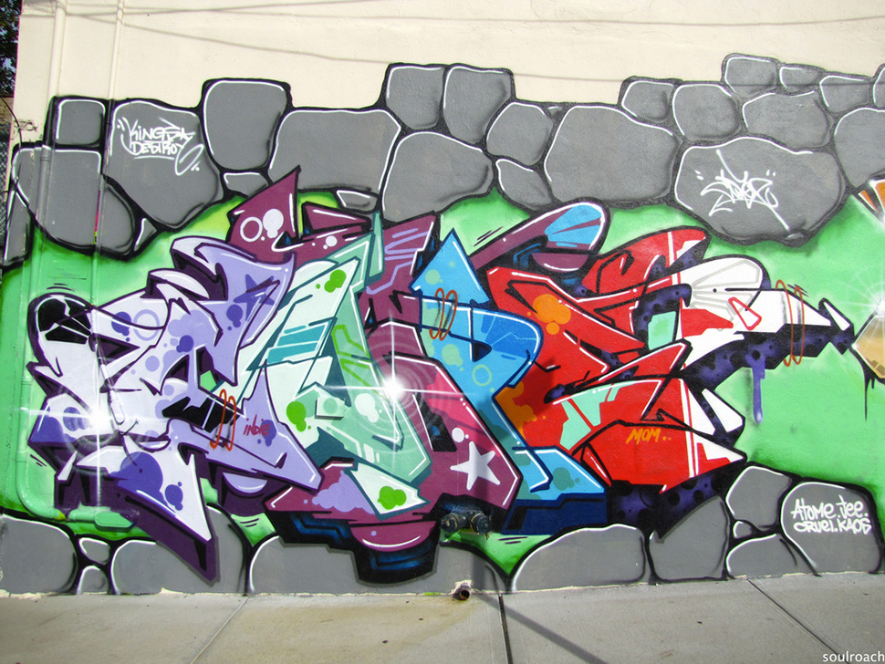
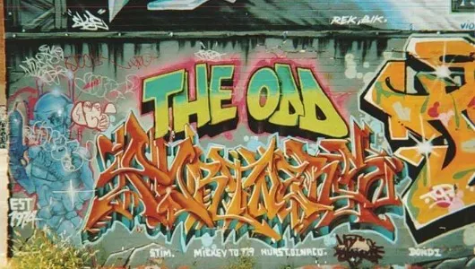
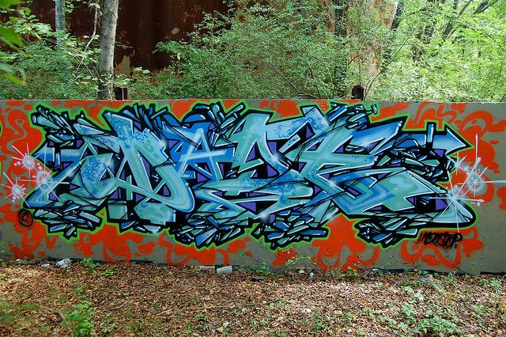
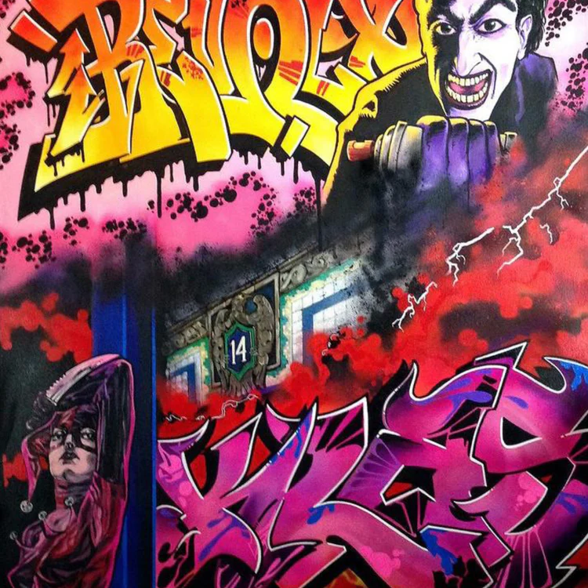

El Graffiti Wild Style es una de las técnicas más difíciles dentro de los existentes. Esto se debe a la complejidad que tienen las letras mismas al momento de plasmar la idea y en su lectura misma. El Wild Style sin duda es uno de los mayores retos para cualquier grafitero o grafitera. Incorpora caracteres entrelazados con diversas formas que se superponen, lo que supone un gran reto para los artistas del spray. Los murales, o las piezas resultantes también conocidas como “Buners”, suelen incorporar flechas, curvas y en ocasiones elementos 3D. Entre sus mayores representantes destacan artistas como: Tracy 168, Stay High 149, Dano, Cabe y Zephyr.
Zephyr:
Cope2:

Dondi white:
Daze:
Revolt: Dentro del Graffiti de revolt tenemos otros elementos como son personajes y fondo que acompaña el wildstyle
